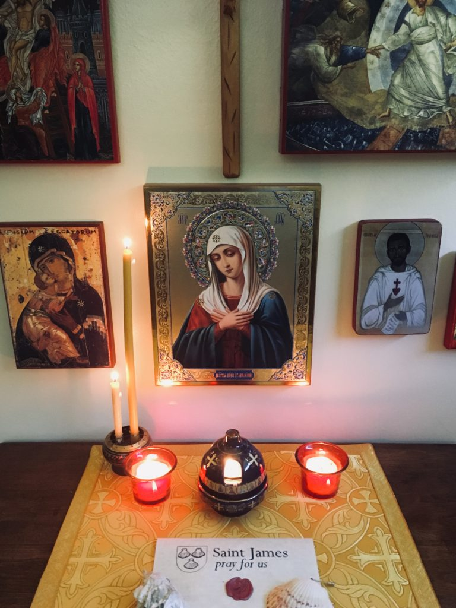
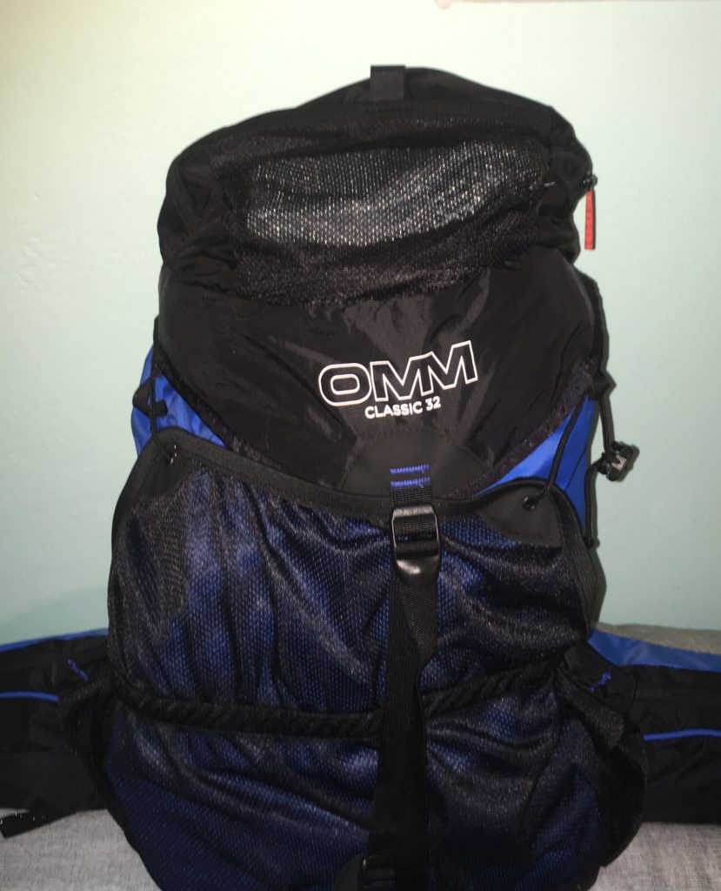
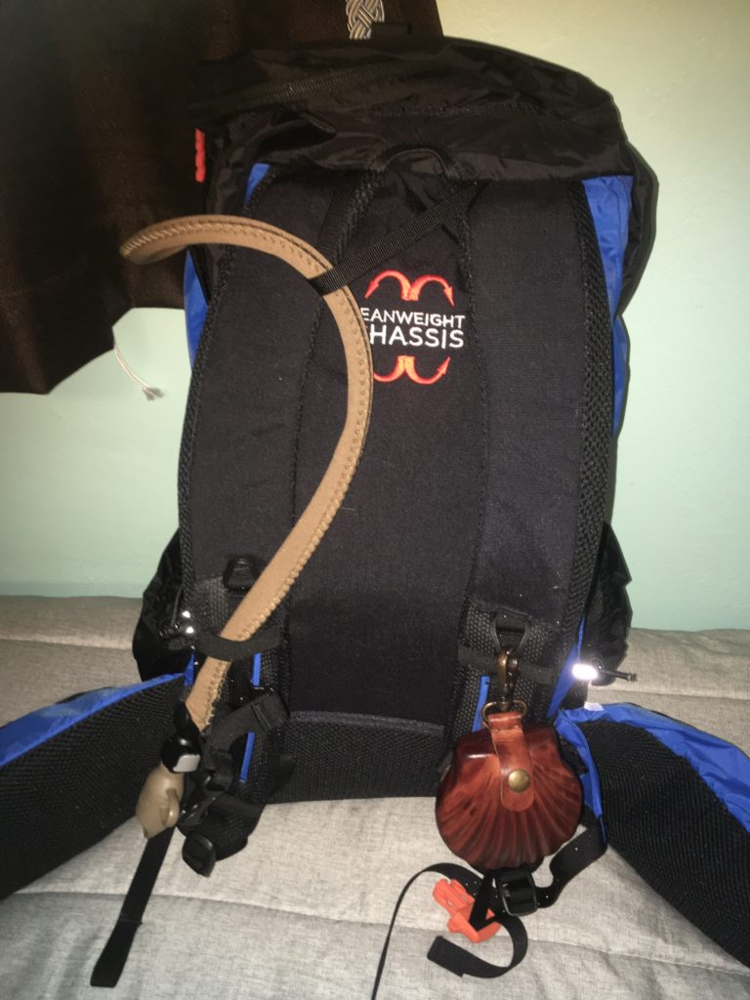

I am leaving soon to walk the Portuguese Coastal Route to Santiago de Compostela. Here’s what I’m taking:

A sealed document with intentions that others have asked me to bring to St. James, along with my 2 pilgrimage shells.
{kind=link}
Not only do you follow signs with scallop shells on the Camino, the shell is associated with St. James and pilgrimage. There are many reasons for this, but one I like is that all the lines on a scallop shell lead to the same point – we are all on different roads that lead to Santiago de Compostela.
Many pilgrims attach a shell to their pack. I’m bringing 2 shells – an oyster shell from Deer Island in Biloxi, and a scallop shell from Pensacola. More info at:
https://www.hillwalktours.com/walking-hiking-blog/camino-scallop-shell-symbolism/
{kind=link}

I went with a British OMM Classic 32L pack – it’s less than a pound, not too expensive, and is very highly rated. The belt will carry my binoculars, wet wipes, and sunscreen.
{kind=link}

The OMM can also fit my Camelbak hydration pack. The leather scallop shell is a replica medieval pilgrim’s purse I bought at Chartres Cathedral in 2017, thinking I wouldn’t make a Camino until after I retired due to the time commitment. It will hold little souvenir stones I’ll pick up along the way, along with the stone I’ll carry throughout the walk and leave behind (another pilgrimage tradition.)
{kind=link}
I’m pretty minimalist when it comes to clothing and travel. Besides what I’ll be wearing, here’s what I’ll take as extra clothing. From the upper-left going clockwise, we have:
– Orange SealLine waterproof dry bag that it all gets stuffed into
– Columbia rain jacket
– Silk sleeping bag liner and Marmot rain pants (in plastic baggie)
– Wool toe liner socks and wool socks
– Undershirts and underwear
– Columbia SPF 50 long-sleeve shirt (one worn)
– A cotton keffiyeh that can serve as sun protection, scarf, pillow, towel, etc.
– Quick-drying shorts and pants
{kind=link}
OMM has a nifty waterproof map pouch that clips to the front of the pack. Here’s what goes in there:
– Paracord that has tons of uses, plus can clip onto the pouch and turn it into a small messenger bag when I want to ditch the backpack at the hotel.
– Black Diamond Storm headlamp
– Emergency blanket
– Individual maps for each day cut out of my main guidebook
– Passport, driver’s license, and pilgrim’s credencial that gets stamped all along the route
– Corncob pipe for special occasions
– Blessed prayer cards that will be photographed at each spot along with the prayer intentions
– Guidebook
{kind=link}
Finally, another SealLine dry sack that has the following:
– Mesh bag that can be clipped to the pack to allow wet clothes to dry while I walk
– Wet wipes
– Electronics bag with cords, power adapter/USB plugs, USB battery, and USB charge/data protector in case I have to plug something into a computer or possibly sketchy power source
– Toiletry bag
– Book, journal, pens
– First aid kit
– Block of fels naptha soap for laundry and gloves since it’s rather potent
When I get back, I’ll let you know what worked, what didn’t, and what I should have brought!
Praying for a safe and wonderful trip. Wish I could go with you….
I hope you have an awe-inspiring pilgrimage!
Please remember me to St. James!
I’ve relocated to the Northshore recently. Perhaps we can communicate when you return.
My prayers go with you.
Surrexit Dominus vere! Alleluia!
Kenneth
Have a wonderful trip! We love you!
The Hine family
Will be praying for you to the nine choirs of angels via St. Michael Chaplet. God be with you, Matthew. Thank you for taking my intentions. Carol